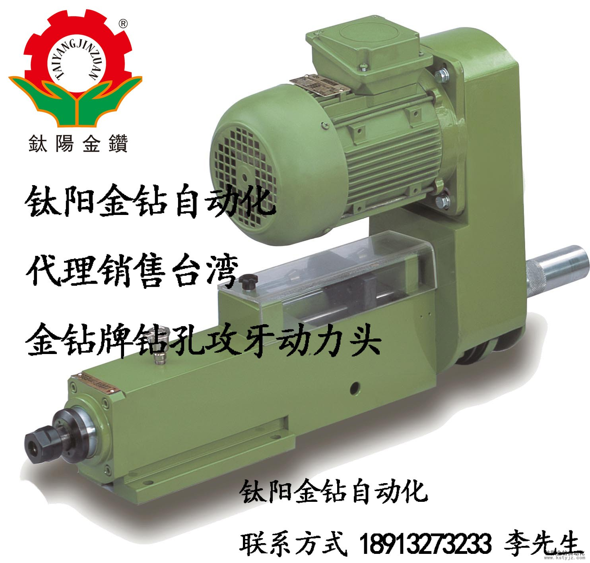
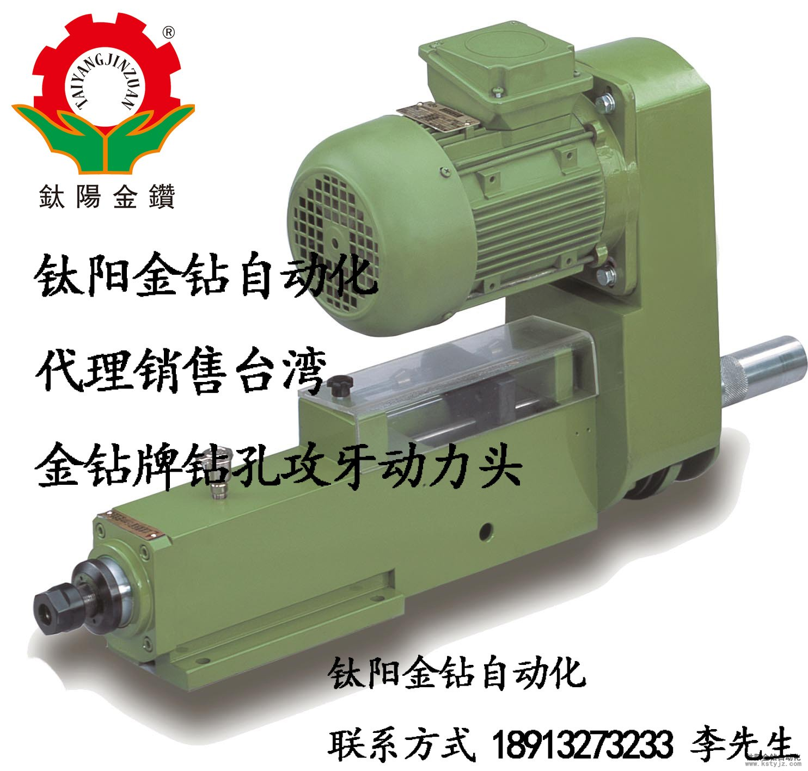

氣壓式D3-100鑽孔動力頭-鈦陽金鑽自動化
文章出處：鈦陽金鑽責任編輯：kstyjz人氣：發表時間：2015-03-05 11:44
鈦陽金鑽自動化設備有限公司長期經銷、維修、改裝金鑽牌各型號動力頭，主軸等配件。鈦陽金鑽自動化設備有限公司提供台灣金鑽牌氣壓式油壓式D3-100鑽孔動力頭，應用廣泛客戶口碑極佳。鈦陽金鑽自動化多年來從事鑽孔攻牙機相關配件的開發生產與維護，客戶遍佈中國各地。承接客戶訂製非標特種機械，為廣大非標配件生產廠商提供優質的解決方案。
關於鑽孔動力頭，它在技術上面的主要參數是動力頭的比較大的直徑是8MM，而鑽孔的最大的行程是100mm，還有就是在軸徑的跳動精度是小於或是等於0.01mm的，關於滑套的軸線和固定的軸線在移動的時候，他們的平行度是小於或者是等於0.02mm的。 在進行加工的時候，精度是比較的高的，還有就是在進行鑽孔的時候，鑽孔的動力頭是要進行氣控以及氣動，之後再進行配合相關的調節流器以及液壓阻尼器，還有就是鑽孔動力頭可以在快進還有工作速度上面進行隨意的調節，在鑽孔動力的安裝上面也是比較的方面的
鈦陽金鑽自動化提供台灣金鑽氣壓式D3-100鑽孔動力頭使用空壓： 4-6kg/cm2;；鑽孔能力：?;5(S45C，空壓5㎏/cm2;時)；容許轉速：8000rpm。
台灣金鑽氣壓式鑽孔動力頭穩定性強，使用過程主軸跳動小，從而使鑽孔精度能夠達到非常高的標準。適合精加工及對加工要求高的廠家使用。
鈦陽金鑽自動化設備提供的台灣金鑽氣壓式d3-100鑽孔動力頭使用空壓： 4-6kg/cm2;；鑽孔能力：?;5(S45C，空壓5㎏/cm2;時)；容許轉速：8000rpm。
動力頭被廣泛應用於大理石、塑料、有色金屬（金屬）、木材、黑色金屬、鋼鐵；壓鑄件、鍛造件、沖壓件、滾壓件、拉伸件；衛浴設備（器材）、管件、接頭、汽機車配件（曲軸、自行車五通管、把手、發動機蓋、化油器、剎車零件、制鎖設備（鎖）、氣液壓閥、氣動元件（加工）、電磁閥（加工）、電器金屬接頭、表殼）等行業。

攻牙動力頭特點有：
1.採牙距工攻牙，適合精密細小之攻牙加工。
2.螺紋牙距，訂購時，請指定。
3.內藏式螺紋樣規,不時常變換牙距者較適用
4.附有扭力裝置,減少線攻折損
5.馬達,皮帶輪座,可360°方向回轉,適合各種裝配方法。
攻牙動力頭被廣泛應用於大理石、塑料、有色金屬(金屬)、木材、
黑色金屬、鋼鐵；壓鑄件、鍛造件、沖壓件、滾壓件、拉伸件；
衛浴設備(器材)、管件、接頭、汽機車配件(曲軸、自行車五通管、把手、發動機蓋、
化油器、剎車零件、制鎖設備(鎖)、氣液壓閥、氣動元件(加工)、電磁閥(加工)、
電器金屬接頭、表殼)等行業。
路皎 15250231221
關於鑽孔動力頭，它在技術上面的主要參數是動力頭的比較大的直徑是8MM，而鑽孔的最大的行程是100mm，還有就是在軸徑的跳動精度是小於或是等於0.01mm的，關於滑套的軸線和固定的軸線在移動的時候，他們的平行度是小於或者是等於0.02mm的。 在進行加工的時候，精度是比較的高的，還有就是在進行鑽孔的時候，鑽孔的動力頭是要進行氣控以及氣動，之後再進行配合相關的調節流器以及液壓阻尼器，還有就是鑽孔動力頭可以在快進還有工作速度上面進行隨意的調節，在鑽孔動力的安裝上面也是比較的方面的
鈦陽金鑽自動化提供台灣金鑽氣壓式D3-100鑽孔動力頭使用空壓： 4-6kg/cm2;；鑽孔能力：?;5(S45C，空壓5㎏/cm2;時)；容許轉速：8000rpm。
台灣金鑽氣壓式鑽孔動力頭穩定性強，使用過程主軸跳動小，從而使鑽孔精度能夠達到非常高的標準。適合精加工及對加工要求高的廠家使用。
鈦陽金鑽自動化設備提供的台灣金鑽氣壓式d3-100鑽孔動力頭使用空壓： 4-6kg/cm2;；鑽孔能力：?;5(S45C，空壓5㎏/cm2;時)；容許轉速：8000rpm。
動力頭被廣泛應用於大理石、塑料、有色金屬（金屬）、木材、黑色金屬、鋼鐵；壓鑄件、鍛造件、沖壓件、滾壓件、拉伸件；衛浴設備（器材）、管件、接頭、汽機車配件（曲軸、自行車五通管、把手、發動機蓋、化油器、剎車零件、制鎖設備（鎖）、氣液壓閥、氣動元件（加工）、電磁閥（加工）、電器金屬接頭、表殼）等行業。

攻牙動力頭特點有：
1.採牙距工攻牙，適合精密細小之攻牙加工。
2.螺紋牙距，訂購時，請指定。
3.內藏式螺紋樣規,不時常變換牙距者較適用
4.附有扭力裝置,減少線攻折損
5.馬達,皮帶輪座,可360°方向回轉,適合各種裝配方法。
攻牙動力頭被廣泛應用於大理石、塑料、有色金屬(金屬)、木材、
黑色金屬、鋼鐵；壓鑄件、鍛造件、沖壓件、滾壓件、拉伸件；
衛浴設備(器材)、管件、接頭、汽機車配件(曲軸、自行車五通管、把手、發動機蓋、
化油器、剎車零件、制鎖設備(鎖)、氣液壓閥、氣動元件(加工)、電磁閥(加工)、
電器金屬接頭、表殼)等行業。
路皎 15250231221
上一篇：FD66-100油壓式鑽孔動力頭-鈦陽金鑽動力頭 | 下一篇：昆山鑽孔攻牙機動力頭動力頭報價動力頭廠家


推薦文章
- 影響電動攻牙機性能的
- 何以自動攻牙機可以做
- 攻螺紋前鑽底孔直徑和
- 鑽孔機如何選擇,台式自
- 攻牙油 百 科
- 自動鑽床自動攻牙機離
- SPS-全自動鑽孔倒角攻牙
- 攻牙機原理,多功能機床
- 動力頭基本構造及相關
- 自動攻牙機深孔。小孔